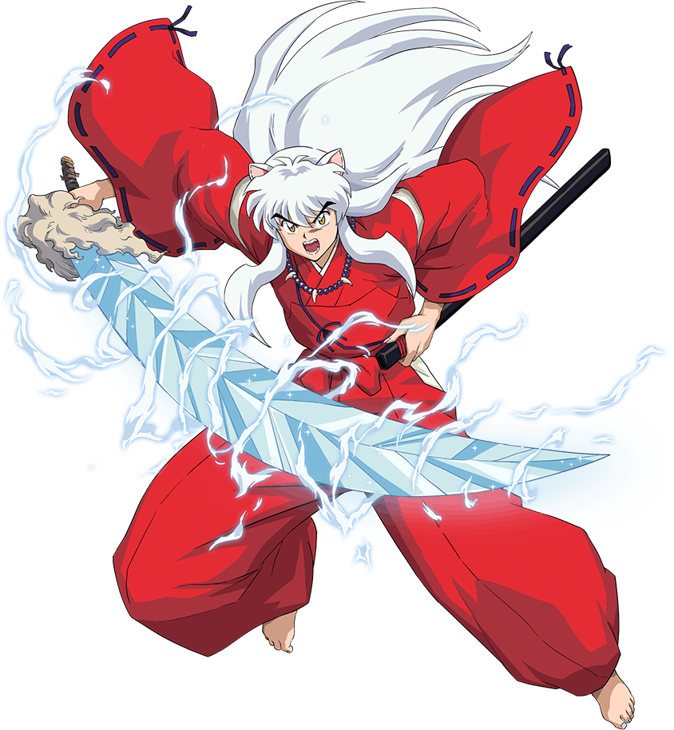
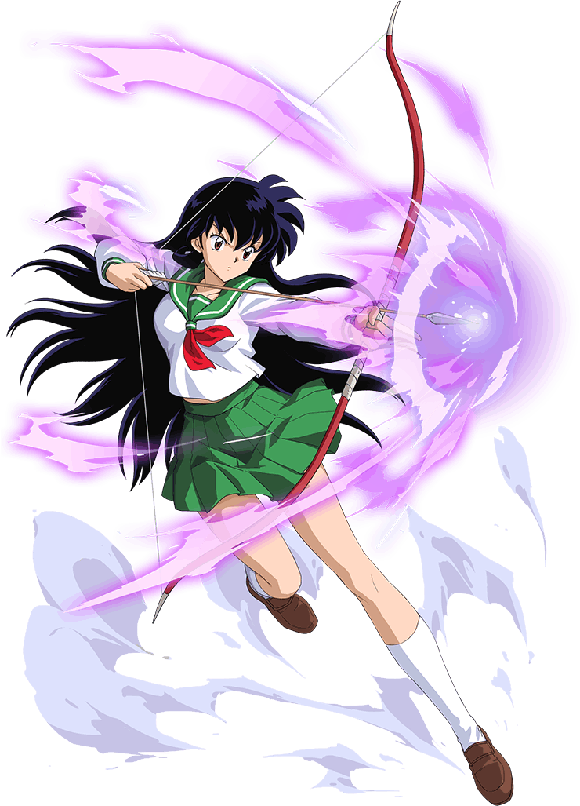
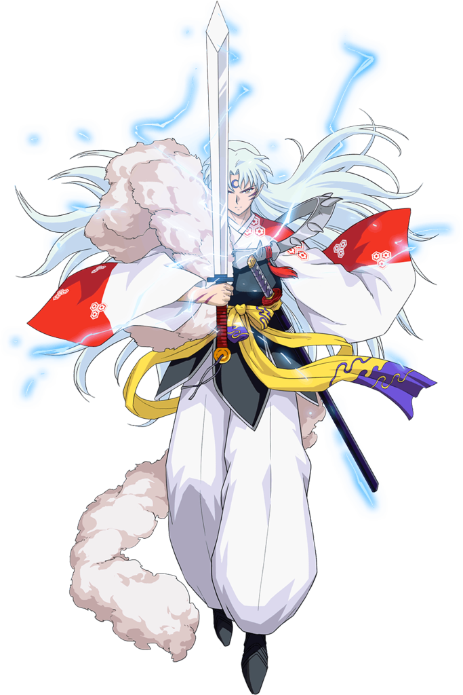
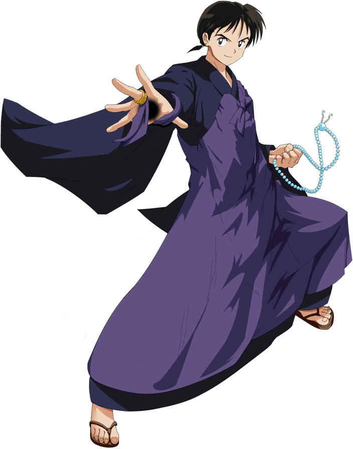
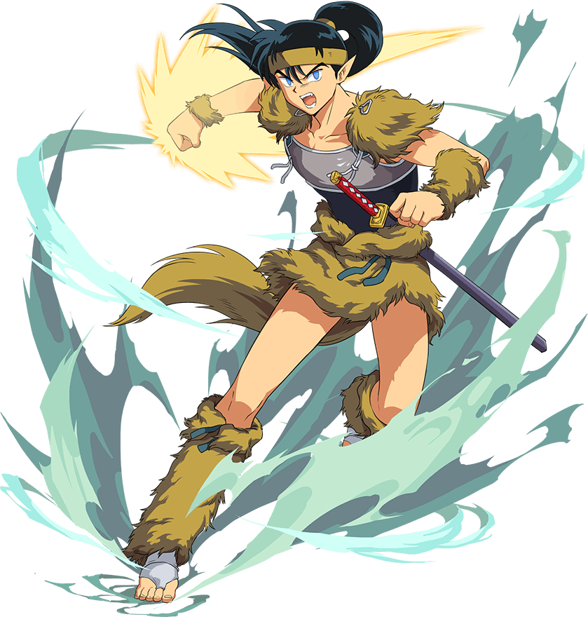
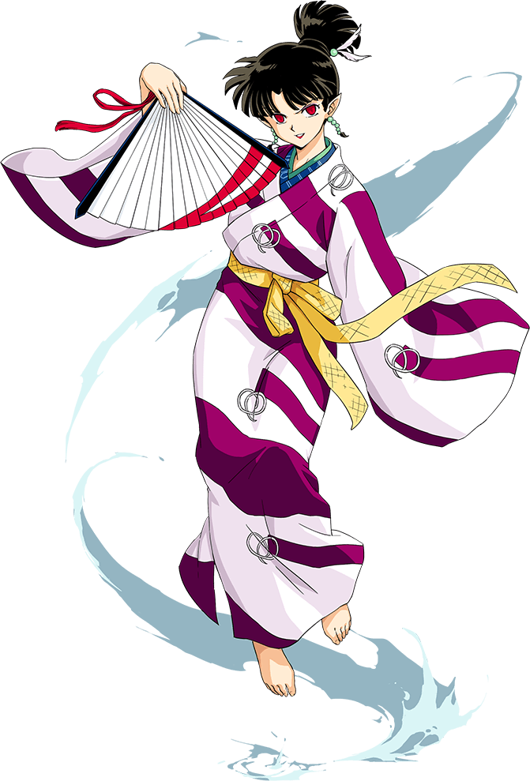
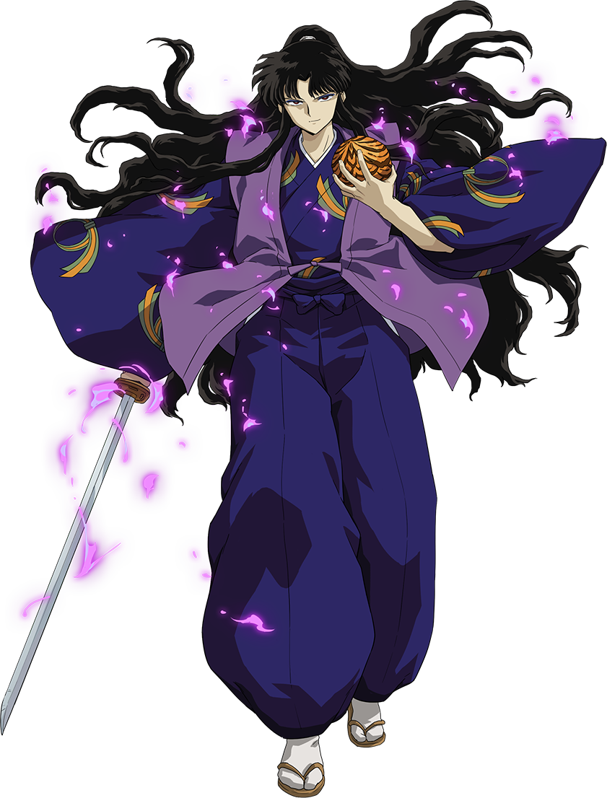
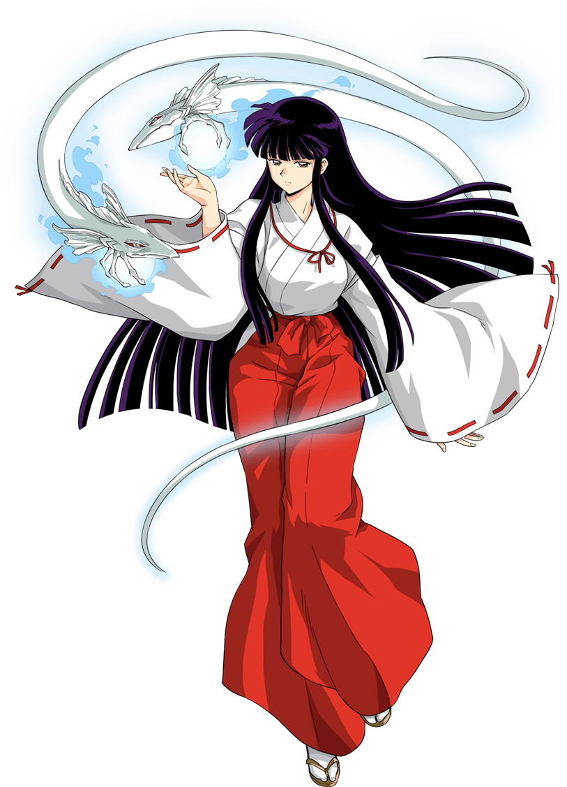

半妖（犬妖与人类的后代），持有父亲斗牙王遗留的妖刀 “铁碎牙”。性格直率冲动，却珍视伙伴，为收集四魂之玉碎片踏上旅程，铁碎牙可释放 “风之伤”“爆流破” 等强力招式，后期逐渐从 “想成为完全妖怪” 转变为 “守护伙伴”
了解更多

犬夜叉的同父异母哥哥（纯种犬妖），容貌俊美且实力强悍。初期执着于夺取父亲的 “铁碎牙”，后期理解了 “守护” 的意义，拥有妖刀 “天生牙”（可复活死者）、“爆碎牙”（自身妖力化形的刀），性格清冷孤傲，会默默守护在意的人
了解更多



反派核心，由 “鬼蜘蛛的邪念” 与众多妖怪融合而成。因爱慕桔梗、嫉妒犬夜叉策划阴谋，目标是收集完整四魂之玉以实现 “不老不死 + 绝对强大”，擅长分身、瘴气攻击，性格阴险狡诈、冷酷残忍
了解更多